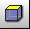

Content of this section:

 cfdmsh 4.0 documentation
cfdmsh 4.0 documentation cfdmsh 4.0 documentation


Content of this section:
Click on  in the toolbar
in the toolbar
Select "Partition_2" → Mesh > Create Mesh →
Set "Algorithm" to "Netgen 1D-2D" →
Click on  beside "Hypothesis" > NETGEN 2D Parameters →
beside "Hypothesis" > NETGEN 2D Parameters →
OK → Apply and Close
Select "Mesh_1" → Mesh > Create Sub-mesh →
Select the refined area face group ("refined") →
Set "Algorithm" to "Netgen 1D-2D" →
Click on  beside "Hypothesis" > NETGEN 2D Parameters →
beside "Hypothesis" > NETGEN 2D Parameters →
Set "Max. Size" to 0.05 → OK →
Click on  beside "Add. Hypothesis" > Viscous Layers 2D →
beside "Add. Hypothesis" > Viscous Layers 2D →
Set "Total thickness" to 0.05 → Set "Number of layers" to 30 → Set "Strech factor" to 1.2 →
Select "Edges with layers (walls)" → Select the foil group ("foil") → click on "Add" →
OK → Apply and Close
Select "Mesh_1" → Mesh > Compute → Close
Click on  in the 3D window toolbar
Click on  in the 3D window toolbar
in the 3D window toolbar
Select the foil group ("foil") and "Mesh_1" together → Type in the Python console:
MakeVirtualOffsetEdgeSubmeshes( [ 0.05, 0.01 ], dim = 1 )
or:
mvoes( [ 0.05, 0.01 ], dim = 1 )
Select the foil group ("foil") and "Mesh_1" together → Type in the Python console:
MakeVirtualOffsetEdgeSubmeshes( [ 0.05, 0.01 ] , dim = 1, rev = 1 )
or:
mvoes( [ 0.05, 0.01 ] , dim = 1, rev = 1 )
Select the foil group ("foil") and "Mesh_1" together → Type in the Python console:
MakeVirtualOffsetEdgeSubmeshes( [ 0.05, 0.01 ] , dim = 0, rev = 1 )
or:
mvoes( [ 0.05, 0.01 ] , dim = 0, rev = 1 )
Select the foil group ("foil") and "Mesh_1" together → Type in the Python console:
MakeVirtualOffsetEdgeSubmeshes( [ 0.05, 0.01 ] )
or:
mvoes( [ 0.05, 0.01 ] )
Select Mesh_1 → Mesh > Compute → Close
You can close this study.
END OF THIS TUTORIAL
cfdmsh 4.0 documentation
tougeron-cfd.com © 2016